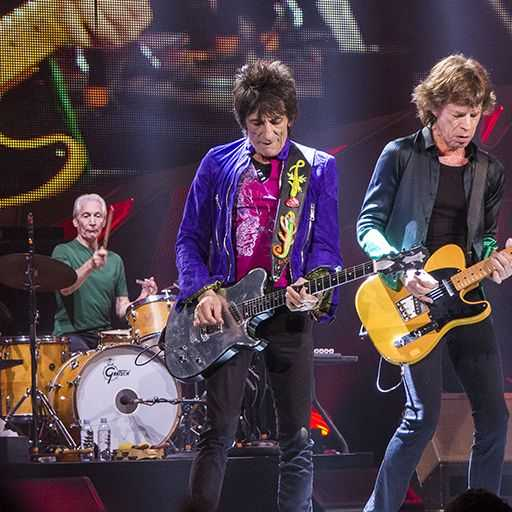
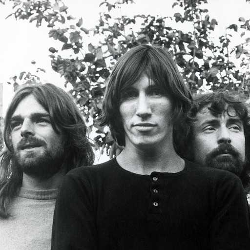

The Beatles
The Beatles – brytyjski rockowy zespół muzyczny z Liverpoolu,
działający w latach 1960–1970. Przez większość tego okresu w jego
skład wchodzili John Lennon, Paul McCartney, George Harrison i Ringo
Starr. Beatlesi wywodzą się z zespołu The Quarrymen, w którym
występowali Lennon, McCartney i Harrison.
Queen
Queen – brytyjski zespół rockowy utworzony w 1970 w Londynie przez
Briana Maya, Rogera Taylora i Freddiego Mercury'ego. Basista John
Deacon dołączył do grupy rok później. Muzyka Queen odznacza się
różnorodnością brzmienia, sprawiającą, że zespół trudno jest
przypisać do konkretnego stylu.

The Rolling Stones
The Rolling Stones – brytyjski zespół rockowy, założony 12 lipca
1962 w Londynie. Są czwartym zespołem rockowym z największą liczbą
sprzedanych wydawnictw muzycznych w historii. Łącznie sprzedali ok.
250 milionów egzemplarzy albumów na całym świecie.

Pink Floyd
Pink Floyd – brytyjski zespół rockowy założony w 1965 roku w
Londynie. Ich twórczość, początkowo klasyfikowana jako rock
psychodeliczny, w późniejszych latach nabrała cech rocka
progresywnego.